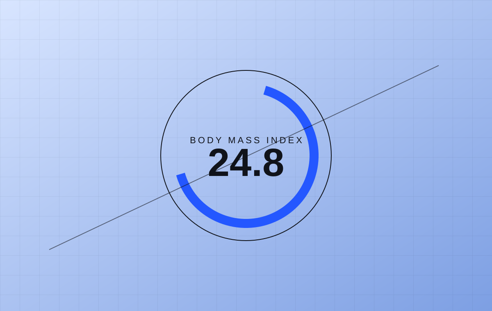
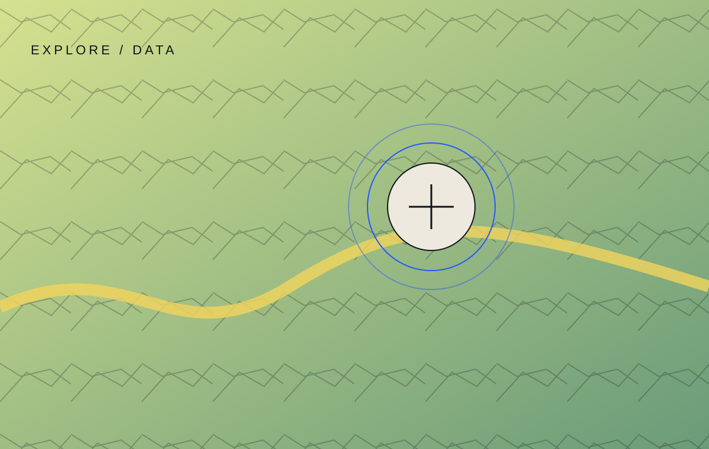
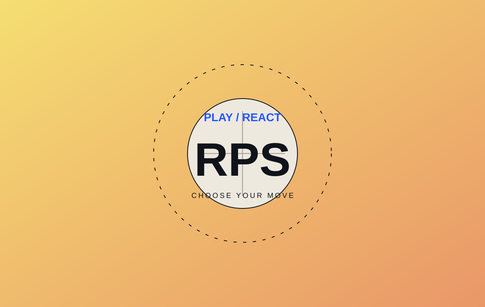
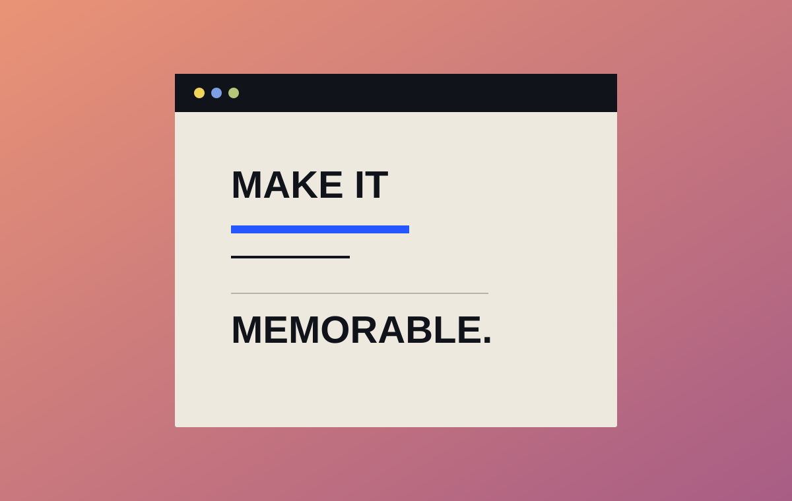
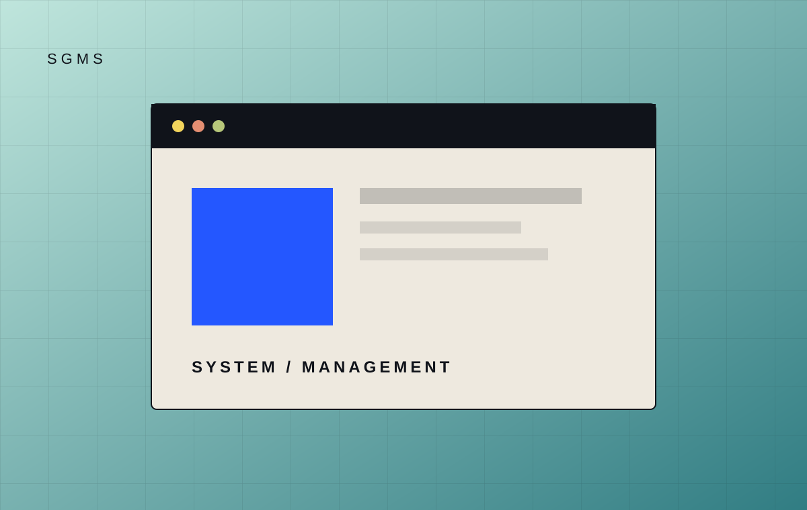
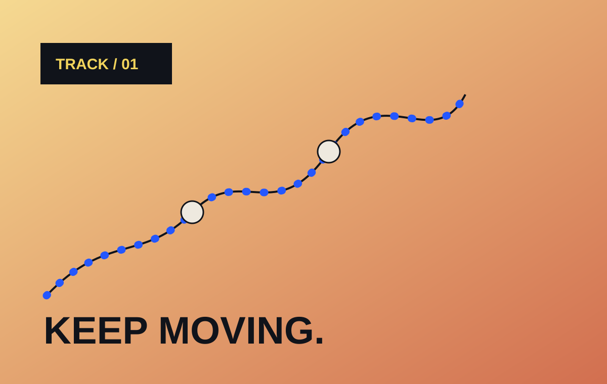
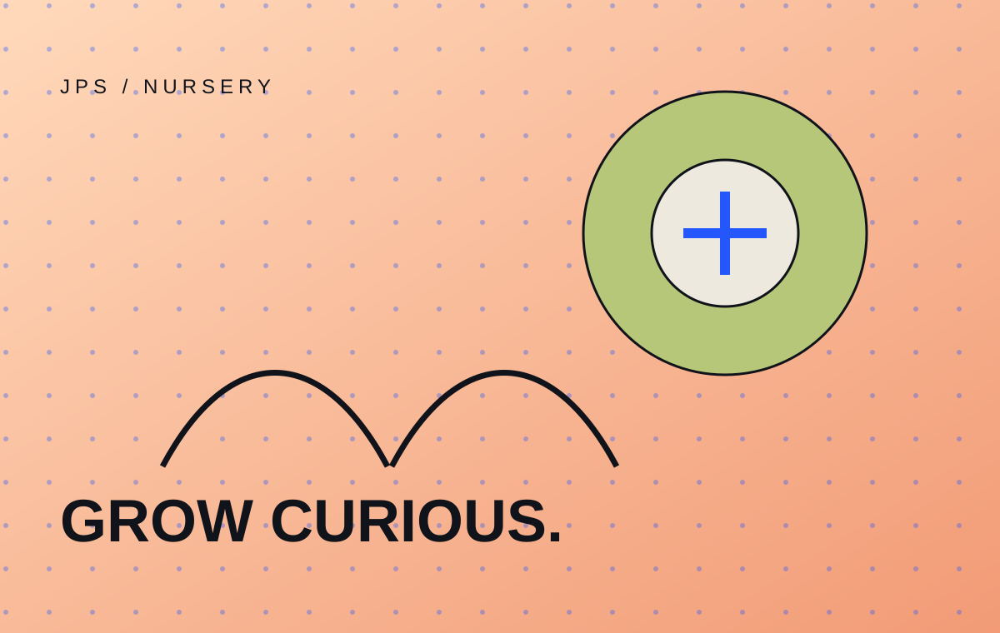
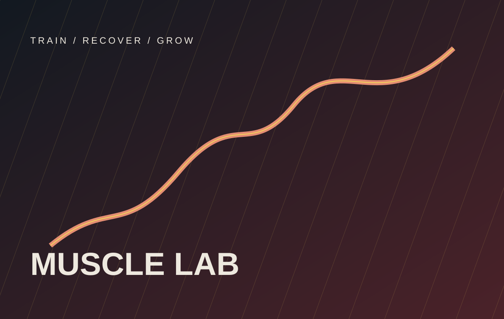

01health / utilityBMI Calculator
A focused health utility that turns height and weight into a clear, readable result. Built with responsive layouts and lightweight client-side logic.
Available for meaningful work 2025—26
Fullstack web developer from Pune, India. I turn thoughtful ideas into fast, expressive and useful products.
(01) The person behind the pixels
I'm Chetan Shinde, a fullstack web developer with 3 months of real-world experience and a deep interest in how the web can make everyday things feel simpler.
I work across the interface and the logic behind it, combining clean frontend development with practical backend thinking. Every project is a chance to learn, refine and make something people enjoy using.
(02) Experience in progress
Building responsive web experiences across frontend interfaces, API-powered features and practical backend workflows.
Deepening React, backend development, database design and the product thinking that turns features into useful experiences.
(02) Selected experiments
A growing collection of practical builds, playful experiments and lessons turned into interfaces.

01health / utilityA focused health utility that turns height and weight into a clear, readable result. Built with responsive layouts and lightweight client-side logic.

02explore / dataAn interactive map experience for discovering geographic data, with a visual language that keeps exploration at the centre.

03play / reactA playful React game built around instant feedback, simple state management and a responsive layout that stays fun on every screen.

04brand / interfaceA visual landing page study exploring hierarchy, rhythm and the small details that make a first impression stay with you.

05system / managementA management-system project shaped around organized information, repeatable workflows and a clear interface for everyday operations.

06progress / workflowA focused tracking experience for keeping progress visible, turning updates into a simple path from the current state to the next milestone.

07education / webA warm, content-first web experience for presenting a nursery, its learning environment and the people it welcomes.

08fitness / APIA fitness information site where users search for a muscle and receive training guidance through an API-powered experience.
(04) What I can build
Fast, considered interfaces that look sharp and work naturally across every screen.
Interactive product surfaces with clear state, thoughtful motion and reusable components.
Practical forms, APIs, dashboards and data flows that make a frontend genuinely useful.
(05) My toolkit
HTML5 / CSS3 / JavaScript / React.js
Python / Django / Node.js / REST APIs
MySQL / MongoDB / Git / Figma
(06) Proof of work
Certificates from my learning journey, plus a resume that brings the full picture together.
Download resume ↓


(07) Have a good idea?
Tell me what you are building, what is stuck, or what you are curious about.